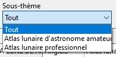
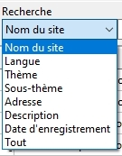
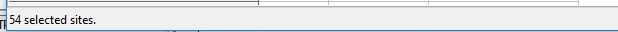

WEBLUN 1.0 ©
|
Bienvenue dans
"WEBLUN » le module de gestion de sites Internet dédiés à
En temps qu'astronomes amateurs nous-mêmes, nous continuons
de perfectionner l'AVL pour concevoir un logiciel toujours plus utile pour les
observateurs de
Nous essayons toujours de définir des fonctionnalités et une interface les plus conviviales possibles et intuitives.
Voilà pourquoi, nous avons incorporé un gestionnaire de données appelé "WEBLUN"
(c) qui vous permet, si vous possédez une
liaision Internet disponible de vous connecter sur des sites Web spécialisés
sur
.
Cette première version comporte les fonctions qui nous ont semblées les plus utiles. Nous réfléchissons à d'autres possibilités qui seront incluses dans les versions suivantes.
Nous vous conseillons de le lire attentivement ce manuel en vous exerçant en même temps au maniement des fonctions décrites afin de découvrir toutes les fonctions du module.
Bonne utilisation et nous espérons que vous apprécierez ce nouveau programme et le recommanderez autour de vous.
Merci beaucoup pour votre confiance.
Christian Legrand & Patrick Chevalley
WEBLUN © est un module de l’Atlas Virtuel de
Il peut être appelé de l’écran du « Centre de
commande » en cliquant sur le bouton WEBLUN
Il a été conçu dans le même esprit que DATLUN ©, le logiciel
de gestion des bases de données de formations lunaires de l’Atlas Virtuel de
PRESENTATION DE
Cette base de données ne prétend absolument pas être
exhaustive. Figurent avant tout dedans, des sites Web intéressants pour
l’observation ou l’étude de
DESCRIPTION DE
NOM_SITE :
Un nom du site concis et décrivant brièvement le site dans la mesure du possible
SITE_NAME :
La traduction anglaise de NOM_SITE
LANGUE :
La langue native du site. Si une version française ou anglaise est aussi disponible, elle est indiquée sous la forme « Japonais / Anglais » par exemple. Si de nombreuses langues sont disposnibles, le champ est indiqué : « Multilingues ».
LANGUAGE :
La traduction anglaise de LANGUE
THEME_FR :
Le thème principal du site. La liste des thèmes principaux retenus est :
- Site général
- Atlas lunaire
- Sonde lunaire
- Site d’images lunaires
- Organisme officiel
- Organisme non officiel
- Livres en ligne
- Revues d’astronomie
- Logiciel lunaire
- Magazine d’astronomie
- Site spécialisé
THEME_EN :
La traduction anglaise de THEME_FR
SOUS_THEME :
Dans certains thèmes, il est possible de classer les sites en sous-thèmes. Ainsi le thème « Sonde lunaire » est subdivisé pour chacune des sondes lunaires. De même, le thème « Site spécialisé » est subdivisé dans les sous-thèmes suivants :
- Généralités
- Guides d’observation
- Volcanisme
- Minéralogie
- Anomalies et LTP
- Sélénographie
- Nomenclature
- Eclipses
- Liste de lien
La liste exhaustive des sous-thèmes sera donnée après stabilisation de la base.
SUB_THEME :
La traduction anglaise de SOUS_THEME
ADDRESS :
L’adresse Web du site concerné telle qu’elle était à la date spécifiée dans DATE_ENREGISTREMENT. Elle se présente sous forme d’un lien Internet directement cliquable.
DESCRIPTION_FR :
Une brève description du site mentionnant notamment les principales caractéristiques qui le rendent attrayant.
DESCRIPTION_EN :
La traduction anglaise de DESCRIPTION_FR
DATE_ENREGISTREMENT :
La date de saisie dans la base de l’ADDRESS Web du site. Cela permet de réactualiser facilement les adresses les plus anciennes.
RECORDING_DATE :
La traduction anglaise de DATE_ENREGISTREMENT
ENREGISTREMENT DE NOUVEAUX SITES DANS WEBLUN
Vous avez réalisé un site Internet sur
Vous pouvez dans ce cas vous faire connaître afin que nous puissions évaluer l’intérêt de la présence de votre site dans la base.
Nous recherchons des sites ayant l’un des caractéristiques suivantes :
- Site présentant des images lunaires à haute définition
- Site décrivant des formations lunaires
Merci de bien vouloir envoyer un mail d’information à l’adresse suivante : chlegrand@free.fr
Les auteurs décideront de l’inclusion éventuelle de votre site. En cas de refus, des suggestions vous seront indiquées afin de vous guider dans l’évolution à réaliser en vue d’une insertion.
L'ÉCRAN
DE WEBLUN

L'écran de WEBLUN tient dans une fenêtre "Windows". Comme toute les fenêtres Windows, vous pouvez minimiser, ou maximiser ou adapter sa taille en cliquant sur les boutons à droite de la barre des titres.
Il est possible d'ouvrir simultanément l'AVL et WEBLUN, ce qui permet l’étude de
La fenêtre de WEBLUN
comporte :
- La barre des menus
- La fenêtre "Liste"
- La barre d'état
LA BARRE DES MENUS

Cette barre comporte un seul menu.
LE MENU
"FICHIER"
Traditionnel dans tous les logiciels Windows (R), il sert dans WEBLUN à revenir aux réglages par défaut et à quitter le programme.
FONCTION "Sélection par défaut"
En activant cette fonction, la sélection précédente que vous auriez opéré est supprimée et toute la base est de nouveau affichée dans la fenêtre « Sélection ».
FONCTION "Quitter"
Cette fonction permet de quitter WEBLUN en fermant la base de données des sites Web et en conservant tous les réglages sur la base, les colonnes et la sélection.
LES
CHAMPS DE TRI
Trois champs de tri permettent de sélectionner des sites ayant des points communs.
- Thème
- Sous-thème
- Recherche approfondie
Le champ « Thème » vous permet de sélectionner les sites relatifs à un thème donné que vous pouvez choisir dans la liste déroulante.
Le champ «Sous-thème » vous permet de sélectionner les sites relatifs à un sous-thème donné que vous pouvez choisir dans la liste déroulante.

Les deux champs « Recherche » vous permettent de sélectionner les sites qui contiennent une expression dans un des champs de la base.

Il vous faut choisir le champ dans la liste déroulante et taper l’expression cherchée dans le champ le plus à droite, puis cliquer sur le bouton [ > ]
La fenêtre de la liste sélectionnée comporte d’autres fonctionnalités nécessaires au tri des données.
.

Tout d'abord, il faut noter que la colonne de gauche présentant le nom du site sur fond gris est obligatoire et ne peut être enlevée. Des ascenseurs, vertical à droite et horizontal en bas, permettent de se déplacer dans la liste.
Si vous cliquez sur l'un des titres de colonnes en gris en haut, la liste se reclasse par ordre numérique (si le champ est numérique) ou alphanumérique (si le champ est alphanumérique) croissant. Si vous cliquez une seconde fois sur ce même titre, la liste se reclasse par ordre décroissant.
FONCTION
"LARGEUR DE COLONNE"
Vous pouvez aussi ajuster la largeur des colonnes en amenant le curseur sur la barre des titres en gris, à la limite entre deux colonnes. Le curseur se transforme alors en une barre verticale mobile permettant le réglage de la largeur.
Appuyez sur le bouton gauche de la souris, restez appuyé et aller à droite ou à gauche pour augmenter ou diminuer la largeur de la colonne.
Si vous ne pouvez pas afficher la totalité de la teneur d'un champ car il est trop long (DESCRIPTION_SITE...), "posez" le curseur dessus. Une bulle apparaît alors contenant la totalité du champ.
Si ensuite, vous double-cliquez sur une ligne, votre navigateur Web se lance et se connecte au site sélectionné.

La barre d'état indique à gauche le nombre total des lignes sélectionnées.
COPYRIGHTS
WEBLUN © est un nom déposé par Christian Legrand.
Les informations de la base de données WEBLUN sont sous copyright de Christian Legrand
Toute utilisation de WEBLUN en dehors de l’Atlas Virtuel de
FIN DU MANUEL DE "WEBLUN"
Les auteurs remercient les utilisateurs de bien vouloir leur signaler toute erreur trouvée dans ce manuel par le biais du forum du site Internet.